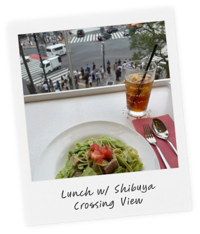
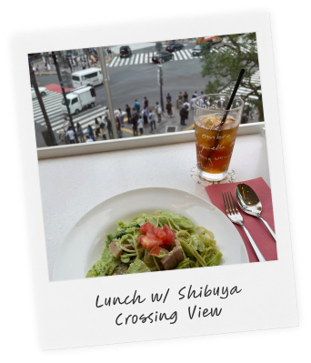
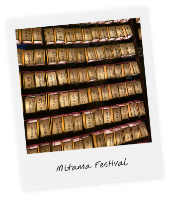
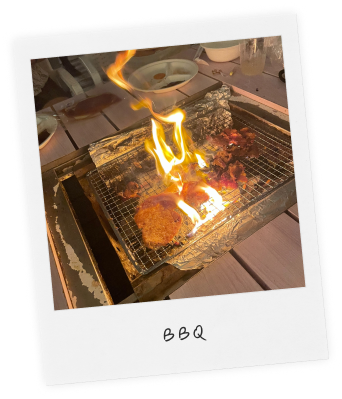
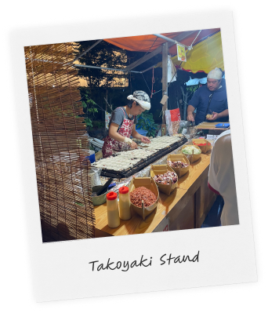

The day after taking the Tokaido-Sanyo Shinkansen from Tokyo Station to Shin-Osaka Station, I visited Osaka Castle. On that day, the sky was clear, but the heat and the humidity felt suffocating as I walked the 15 minutes towards Osaka Castle from the station. However, it was worth it because the castle was beautiful.
Japan


 

This was my first lunch in Japan that I had while overlooking the famous Shibuya Crossing. It was really nerve-racking because it was my first time sitting down and ordering in Japanese at a restaurant.

This was my first festival that I have attended in Japan! This festival is for obon, a custom to honor the spirits of one's ancestors. The festival was really crowded, and it was hard to move around, but it was fun!

This was my get together with the group of interns from the UC's. We had bbq with everyone at a nice place near the beach in Toyosu. This picture that I took was actually when our fire got too big that it set off the fire alarm.

This takoyaki stand is from a small festival near where I stayed in a shared house with 2 other interns from the same program. I actually discovered a festival was happening while getting off at the opposite side of the station. It was nice because we all got to explore our ward that we lived in for two months.